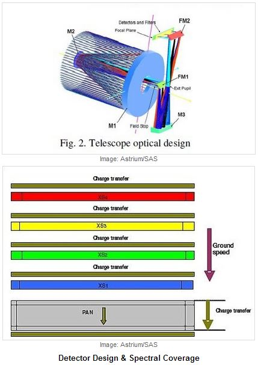
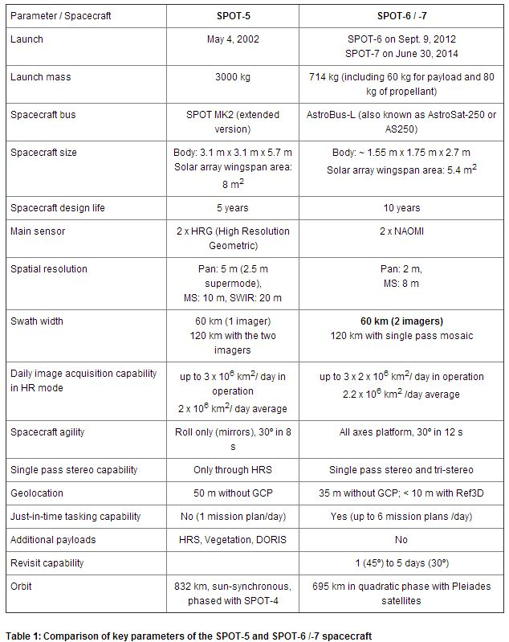
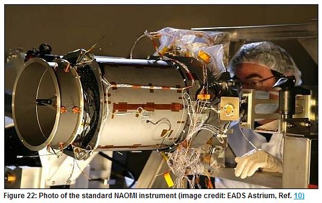
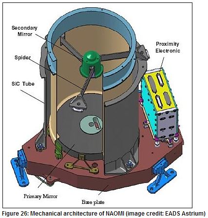

Ref : http://en.wikipedia.org/wiki/SPOT_(satellite)
http://www.astrium-geo.com/en/147-spot-6-7-satellite-imagery
http://www2.astrium-geo.com/files/pmedia/public/r2928_9_geo_012_spot_6_7_en_low.pdf
http://www.spaceflight101.com/spot-7.html
https://directory.eoportal.org/web/eoportal/satellite-missions/s/spot-6-7




New AstroSat Optical Modular Instrument
The main payload of the SPOT7 spacecraft consists of two NAOMI optical imagers. The New AstroSat Optical Modular Instrument has extensive flight heritage having flown on the KazEOSat-1, SPOT-6, SSOT and VNREDSat-1A satellites. The instrument weighs 150 Kilograms and has a peak power demand of 180 Watts.
The instrument is a high-resolution pushbroom-type imager that was developed by EADS Astrium and SAS. NAOMI is comprised of an optical bench consisting of SiC to provide extremely high thermal stability, a focal plane assembly with Time Delay Integration Detector, back-end electronics for data processing and interfaces for data and command exchange with the spacecraft computer.
The telescope uses a Korsch combination with three aspheric mirrors and two folding mirrors using an aperture diameter of 20 centimeters. This design was chosen because of its simplicity and compact size – fitting within the small spacecraft platform. An entrance baffle is used for stray light rejection. Light entering the detector is passed from the primary mirror M1 onto the M2 mirror before passing Folding Mirror 1 to the M3 mirror that reflects the light through the Exit Pupil to Folding Mirror 2 that passes the light onto the detector.
The Time Delay Integration detector uses a silicon CCD detector assembly with 7000 pixels for the panchromatic channel and four lines of 1750 pixels for the multispectral bands. All detectors are equipped with strip filters and front end electronics. The front end electronics provide the detectors with biasing and clocking signals as well as pre-amplification of the signals before transmitting them to the video electronics.
The back-end electronics provide power supplies for the operation of the front-end and provide data processing via modular video chains that operate at frequencies of up to 15Msamples/sec. The signals from the front end is digitally converted in the back end using a 12-bit conversion scheme and the data is then transferred for real-time processing and storage in the mass memory.
The instrument covers five bands – the panchromatic band of 450 to 750 nanometers and four multispectral bands including blue (450-520nm), green (530-600nm), red (620-690nm) and near infrared (760-890nm). The telescope covers a ground swath of 20 Kilometers and the spacecraft has a field of regard of +/-35 degrees (800km) as it is tilted around nadir for event monitoring. NAOMI on SPOT7 can deliver panchromatic images at a ground resolution of two meters at nadir while the multispectral imagery will reach resolutions of eight meters.
The instrument is a high-resolution pushbroom-type imager that was developed by EADS Astrium and SAS. NAOMI is comprised of an optical bench consisting of SiC to provide extremely high thermal stability, a focal plane assembly with Time Delay Integration Detector, back-end electronics for data processing and interfaces for data and command exchange with the spacecraft computer.
The telescope uses a Korsch combination with three aspheric mirrors and two folding mirrors using an aperture diameter of 20 centimeters. This design was chosen because of its simplicity and compact size – fitting within the small spacecraft platform. An entrance baffle is used for stray light rejection. Light entering the detector is passed from the primary mirror M1 onto the M2 mirror before passing Folding Mirror 1 to the M3 mirror that reflects the light through the Exit Pupil to Folding Mirror 2 that passes the light onto the detector.
The Time Delay Integration detector uses a silicon CCD detector assembly with 7000 pixels for the panchromatic channel and four lines of 1750 pixels for the multispectral bands. All detectors are equipped with strip filters and front end electronics. The front end electronics provide the detectors with biasing and clocking signals as well as pre-amplification of the signals before transmitting them to the video electronics.
The back-end electronics provide power supplies for the operation of the front-end and provide data processing via modular video chains that operate at frequencies of up to 15Msamples/sec. The signals from the front end is digitally converted in the back end using a 12-bit conversion scheme and the data is then transferred for real-time processing and storage in the mass memory.
The instrument covers five bands – the panchromatic band of 450 to 750 nanometers and four multispectral bands including blue (450-520nm), green (530-600nm), red (620-690nm) and near infrared (760-890nm). The telescope covers a ground swath of 20 Kilometers and the spacecraft has a field of regard of +/-35 degrees (800km) as it is tilted around nadir for event monitoring. NAOMI on SPOT7 can deliver panchromatic images at a ground resolution of two meters at nadir while the multispectral imagery will reach resolutions of eight meters.
For imaging sessions, SPOT-7 can use its agile attitude control system to support a variety of observation modes. The spacecraft is capable of acquiring a multitude of scenes in a localized area – up to 11 scenes – each 60 by 60 Kilometers - can be collected within a 1,000-Kilometer long ground strip. Strip imaging is also possible and SPOT-7 can acquire multiple strips of a target area in a single pass with strip lengths of up to 600 Kilometers. Mosaic strip-imaging in which the satellite acquires multiple image strips of adjacent areas is also possible to cover an 300 by 330-Kilometer rectangular target area in a single pass. For regular imaging, SPOT-7 will use off-nadir angles up to 35 degrees which also allows the spacecraft to support quick-revisit times of one day.
SPOT-7 can also collect stereo and tri-stereo images in one pass. Data is automatically geo-referenced using an automated system that operates at an accuracy of 10 to 20 meters after calibration.
SPOT-7 is planned to operate in a circular orbit at 695 Kilometers at an inclination of 98.2 degrees. The satellite will be phased into a constellation with the SPOT-5 and SPOT-6 satellites as well as the Pleiades 1A and 1B spacecraft to establish an Earth Observation Constellation with fast revisit times and quick response times to targets of opportunity.
SPOT-7 utilizes a simplified Ground Control Segment consisting of the CGS – the Control Ground Segment and the EGS – the Exploitation Ground Segment. The division of labor between these two components is very clear – the CGS is in charge of commanding the spacecraft, monitoring its health, performing periodic maintenance operations, planned orbital maneuvers and accepting the mission plan from the EGS. The EGS plans the targets that are to be imaged by the satellite and accepts all data downlinked by the spacecraft for processing, distribution to customers and archiving. SPOT-7 supports up to six mission plan updates per day allowing quick response times and just-in-time tasking with rapid delivery of data products after acquisition.
SPOT-7 is planned to operate in a circular orbit at 695 Kilometers at an inclination of 98.2 degrees. The satellite will be phased into a constellation with the SPOT-5 and SPOT-6 satellites as well as the Pleiades 1A and 1B spacecraft to establish an Earth Observation Constellation with fast revisit times and quick response times to targets of opportunity.
SPOT-7 utilizes a simplified Ground Control Segment consisting of the CGS – the Control Ground Segment and the EGS – the Exploitation Ground Segment. The division of labor between these two components is very clear – the CGS is in charge of commanding the spacecraft, monitoring its health, performing periodic maintenance operations, planned orbital maneuvers and accepting the mission plan from the EGS. The EGS plans the targets that are to be imaged by the satellite and accepts all data downlinked by the spacecraft for processing, distribution to customers and archiving. SPOT-7 supports up to six mission plan updates per day allowing quick response times and just-in-time tasking with rapid delivery of data products after acquisition.